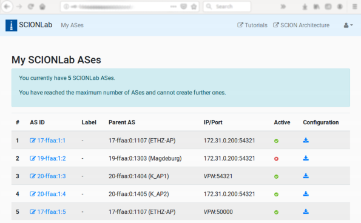

Creating SCIONLab AS¶
SCIONLab Portal Overview¶
In order to create a SCIONLab AS you must login on SCIONLab. In case you don't have an account yet, please follow the registration process.
After loggin in, you land on the My ASes page.

- The
My ASeslink in the navbar brings you back to this page when you navigate away. - The drop-down menu under the -symbol in the navbar contains links to change your password and log-out.
This view is initially empty, later you will see a list of your ASes:

- The columns in this summary refer to the configuration you've made for this AS, as discussed below.
- The link with the -symbol in the
AS IDcolumn brings you to the edit page for an AS. - The link with the -symbol in the
Configurationcolumn lets you download the configuration tarfile for an AS. - The tick or cross in the
Activecolumn indicate whether an AS has been deactivated (using the corresponding button in the edit page).
Configure a SCIONLab AS¶
The Create a new SCIONLab AS button or on the edit link for an existing AS will bring you to the same configuration form.

-
Label: here you can add a short label for your AS that will be displayed on the
My ASeslist page. This label just helps you identify your ASes and doesn't have any other functionality. -
Attachment Point: this selects the provider AS for your AS. This selection also determines the ISD (isolation domain) which your AS will belong to.
After creating your AS, you can still change your Attachment Point as often as you want.
For lower latency, prefer to pick an Attachment Point that is closest to you -- the topology map on the SCIONLab home page has some hints on the geographical regions in which the ASes are located.
The following options are the parameters for the overlay link between the border router in your AS and the border router in the Attachment Point AS.
-
Use VPN: if enabled, an OpenVPN tunnel is configured between your AS and the chosen Attachment Point.
The
IP addressoptions below will disappear, as the VPN-internal IP address will be used in the border router configuration.Use this option if:
- you don't have a static public IP address or
- you are behind a NAT or firewall and you cannot open/forward a chosen UDP port
- you want to "just make it work", as you'll need to know no further details about your network configuration
The configuration file will contain an OpenVPN configuration file
client.conf. After extracting this file to/etc/openvpn/, you can start the tunnel by runningsudo systemctl start openvpn@client. -
Public IP Address, Bind IP Address
Find your public IP e.g. by visiting whatsmyip.org or by running
dig +short myip.opendns.com @resolver1.opendns.com
Find your local IP address e.g. by running
ip route get 8.8.8.8 | head -1 | cut -d' ' -f8
If your host has a public IP (the public IP is identical with the local IP), only fill the
Public IP Addressfield and leave theBind IP Addressfield blank.If you are in a network behind a NAT (the public IP and local IP are different), fill the
Public IP Addressfield with the public IP and theBind IP Addressfield with the local IP address.Note
Currently, IPv6 cannot be used. Even though support for IPv6 is implemented, none of the currently available Attachment Points have an IPv6 address configured.
-
Public Port, Bind Port:
Choose a UDP port on which your Border Router will be reachable. We typically use ports in the range 50000-51000 by convention, but you're free to choose any other.
If you are behind a NAT or firewall, make sure to open/forward the chosen port. For this you may need to contact your network administrator. If you have a port forwarding rule that rewrites the port number, enter the local port number in the
Bind Portfield, otherwise leave it blank.
Finally, select the type of SCION installation for which the configuration should be created.
- Installation Type: please refer to Installation/Pick an Option.
Download and install configuration¶
After creating or modifying your AS as described above, you can deploy the generated configuration to your machine. The procedure for this depends on which type of SCION installation you chose. Please follow the instructions on the individual pages.